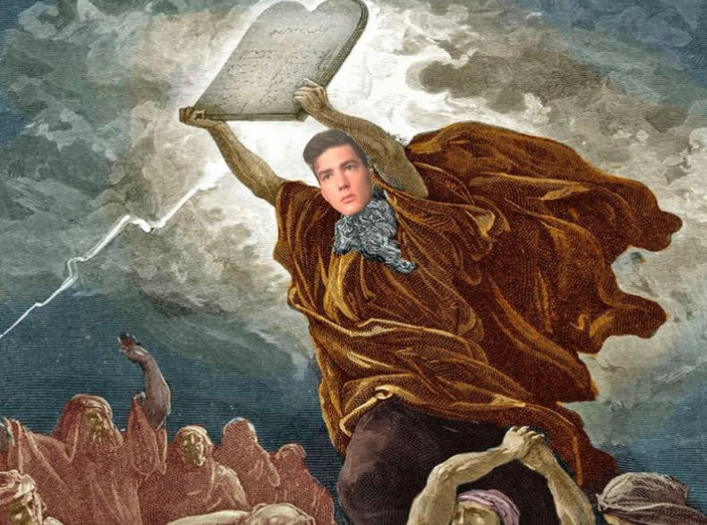

The official "The Big Dawgs" fantasy football website.
'Mish's 'Mandments
First 'Mandment
The league rests in a murky landscape after the first week of games. What many of us had hoped would be a revealing series of contests to show us clarity in the destinies of our chosen gridiron warriors, could be nothing more than a mirage seen on the horizon. One that as soon as we reach out to grasp the assured realization of our drafts, dissipates as nothing more than an early season load bust. Players this time last year who exploded onto the scene showing what must surely be fantasy stardom often times fell off a steep cliff as soon as their fates returned to the mean, Icarus manifest. All this is to say that as much as some of your surprising, or not so surprising, fantasy studs and duds may have you ripping out your hair or screaming to the heavens in joy, prepare for a market correction in week 2. Be ready to react but not overreact, and most of all don’t not react.
- commish, out

9/16/22: Fantasy Football Website Launch!
Welcome to the official "The Big Dawgs" fantasy football website. By using the bottom navigation bar you will be able to access: Up to date league news, weekly power rankings, league game previews, and communicate with your league-mates on the forum.
Musin' with the 'Mish
The Queen's Men
Lately I’ve found myself pacing about the grounds of my property line, searching for answers. Most of all, what would the queens fantasy lineup look like if she was in the Big Dawgs League. First off, Elizabeth, it should be noted was a raging racist. It is almost assured she would have sooner given back the north to Ireland than she would have a running back the likes of Leonard Fournette fighting in her stead. Similarly important to her love of bigotry was her enjoyment of the Hero RB draft strategy in which Liz would draft a sure fire stud RB early and follow that up with 3-4 rounds of heavy receiver recruitment. So we much assume a lineup following these guidelines would look something like this.
------------------>
The Queen's Men Pt.2
Round 1: Christian McCaffrey
White savior of the football skill position, easy
Round 2: Travis Kelce
A lucky drop for the monarch, a fantastic choice at a depleted position
Round 3: Michael Pittman
The queen’s eyesight did not allow her to completely realize that Michael is mixed race. But great value.
Pick 4: Adam Thielen
A reach for sure, but at this point the pool of fantasy relevant caucasians is getting thin.
Round 5: Dalton Schultz
Doubling up so early at TE is likely going to come back to bite Elizabeth later in the season.
Round 6: Rex Burkhead
Finally time to pick up her second RB, The Queen’s flawed draft strategy is beginning to topple.
Rounds 7-15
Hunter Renfrow, Aaron Rodgers, Daniel Carlson, Zach Ertz, Rob Gronkowski, Tyler Lockett, Hunter Henry, Kyle Juszczyk, Andrew Beck.
Final Record: 4-11